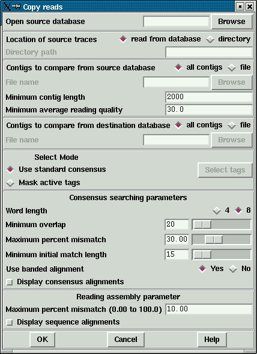

The Copy reads function is available from either the File menu of gap4 or from the command line.
The program must be able to write to both databases. It is recommended that you create backups of both databases before commencing using "Copy database". See section Making Backups of Databases.
From within gap4: The source database must be entered into the "Open source database" entry box at the top of the dialogue box. The adjacent Browse buttons will list only gap4 databases, that is files ending in aux. Either select from the browser by double clicking on the name or type in the database name. The ending of .aux is ignored. The destination database is always the database which is currently open in gap4.
The location of the traces of the source database can either be determined from the rawdata note (see section Trace File Location) held within the database ("read from database") or can be entered via the "directory" option. The program will add the location of the source traces into the rawdata note of the destination database. If the environment variable RAWDATA is set, this will be taken to be the location of the destination database traces and will also be added to the rawdata note of the destination database. If there are no traces for the source database, no rawdata note will be created.
One or more contigs from the source database can be compared. These are selected either by clicking on "all contigs" or providing a file containing a list of contig names (any reading name from within that contig, typically the first reading name). Only contigs over a user defined length will be used. A minimum reading quality can be set so that only readings with an average quality over the specified amount will be entered into the destination database.
Contigs from the destination database can be chosen by either selecting "all contigs" or providing a file of contig names.
The consensus sequence is determined for each contig in both databases using either the standard consensus algorithm or "Mask active tags". The latter option will activate the "Select tags" button. Clicking on this button will bring up a check box dialogue to enable the user to select the tags types they wish to activate. Masking the active tags means that all segments covered by tags that are "active" will not be used by the matching algorithms. A typical use of this mode is to avoid finding matches in segments covered by tags of type ALUS (ie segments thought to be Alu sequence) or REPT (ie segment that are known to be repeated elsewhere in the data (see section Tag types).
The consensus searching parameters are equivalent to those found in the find internal joins algorithm (see section Find Internal Joins). The search algorithm first finds matching words of length "Word length", and only considers overlaps of length at least "Minimum overlap". Only alignments better than "Maximum percent mismatch" will be reported. Find internal joins has the option of either a quick or sensitive algorithm. Here, it is only necessary to use the quick algorithm. The quick algorithm can find overlaps and align 100,000 base sequences in a few seconds by considering, in its initial phase only matching segments of length "Minimum initial match length". However it does a dynamic programming alignment of all the chunks between the matching segments, and so produces an optimal alignment. A banded dynamic algorithm can be selected, but as this only applies to the chunks between matching segments, which for good alignments will be very short, it should make little difference to the speed. The alignments between the consensus sequences can be displayed in the text output window by selecting "Display consensus alignments".
If a match between two consensus sequences is found, the readings in that overlap are assembled into the destination database using the "directed assembly" function (see section Directed Assembly). Only readings for which the "Maximum percent mismatch" is not exceeded, and which have an average reading quality higher than the specified minimum, will be entered into the database. Again, the alignments can be shown in the Output window by selecting "Display sequence alignments".
From the command line:
copy_reads [-win] [-source_trace_dir ("")] [-contigs_from <file> (all contigs)] [-min_contig_len (2000)] [-min_average_qual (30.0)] [-contigs_to <file> (all contigs)] [-mask <none mask> (none)] [-tag_types <list> ("")] [-word_length (8)] [-min_overlap (20)] [-max_pmismatch (30.0)] [-min_match (20)] [-band (1)] [-display_cons] [-align_max_mism (10.0)] [-display_seq] [source database] [destination database]
The values in brackets () are the default values. The only mandatory values are the source and destintation databases. Details on these values are given in the copy_reads man page (see section Copy reads).
The -win option will bring up a new program which presently only has one function (copy reads). This is accessed from the "File" menu. This brings up a dialogue the same as that from within gap4 except for an extra entry box to select the destination database.